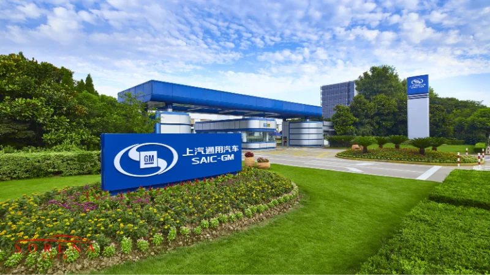

این شرکت حاصل ادغام 4 خودروساز برتر چینی است که همگی متعلق به دولت چین هستند. دفتر مرکزی این شرکت در شهر شانگهای چین مستقر است؛ اما فعالیت آن محدود به این شکور نیست و در بیشتر شهرهای بزرگ جهان دفتر فروش دارد. سایک موتور از سال 2006 در بازار فروش خودروهای چینی جایگاه خوبی برای خود دست و پا کرد و در حال حاضر هم در تایلند کارخانه دارد و هم از طریق سرمایهگذاری مشترک، شریک تجاری بسیاری با برندهای معروف دنیا محسوب میشود. این شرکت بیش از 2 میلیون خودرو فقط در چین فروخته و از این نظر جایگاه اول را در بازار داخلی دارد. ثبت 107.6 میلیارد دلار درآمد سالانه توانسته سایک موتور را به چهارمین شرکت برتر با بیشترین حجم فروش خودرو های سواری در بازار داخلی تبدیل کند.
